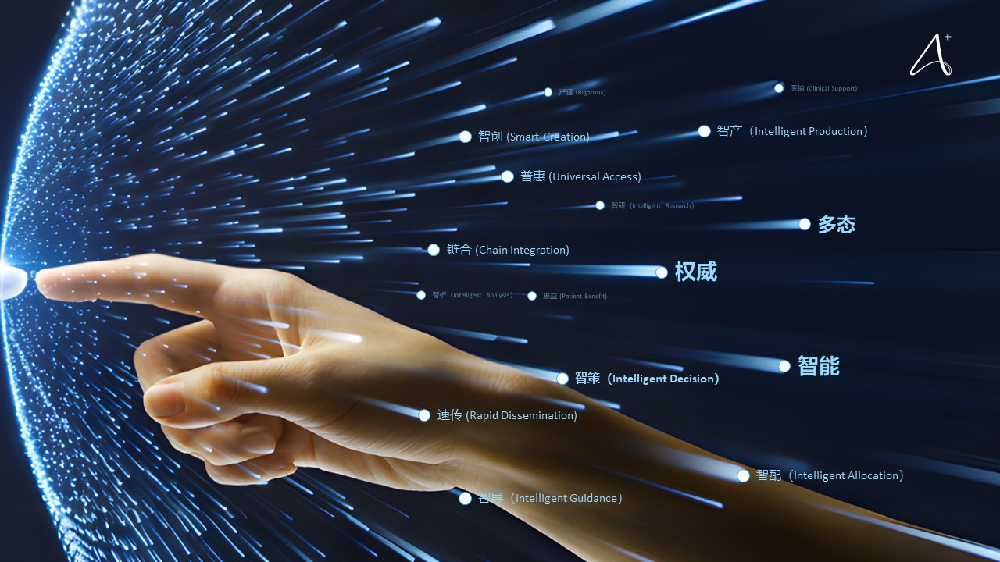

我们首创“高效+权威”双轮驱动方案，构建“智能生成-权威审核-多态输出”的人机协同闭环，彻底改变肿瘤科普的生产与传播方式
AI驱动 · 高效增能： 我们利用生成式AI技术，将医生从繁重的科普内容创作中解放出来。医生只需提供关键要点，AI即可自动生成通俗易懂的科普内容初稿，并能将专业成果智能“转译”成为大众的通俗语言，实现“减负增效”。
专家审核 · 权威保障： 我们深知医疗科普的严谨性。所有AI生成的内容，都必须经过来自北京大学肿瘤医院顶尖专家团队的多重严格把关，确保每一份内容的科学性、准确性与人文关怀，以此来建立患者的绝对信任。
基于患者的个人画像，快速生成个性化、通俗易懂的科普脚本与内容初稿
依托北大肿瘤医院专家团队，对内容进行多重把关，确保科学性与准确性
将已审核定稿的内容，轻松转化为动漫、短视频、交互图文等丰富形态

我们的技术愿景，是让医学科普更智能、更精准、更具人文关怀 。通过AI技术，我们实现了：
从医生工作台到患者健康助手，我们打造了一个完整的功能矩阵